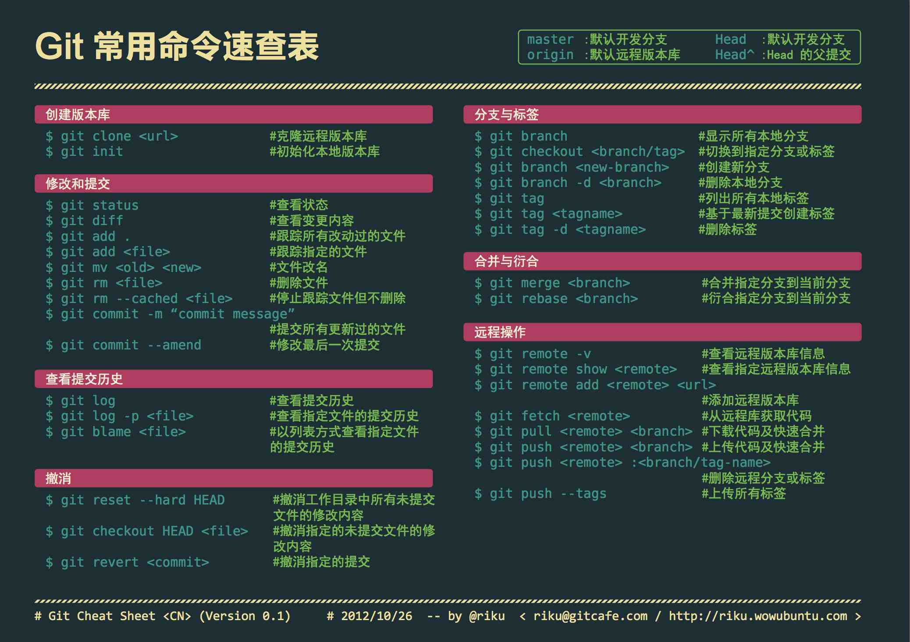

初始化设定
1
2
3
4
5
| git config --local user.name 'your name'
git config --local user.email 'hello@example.com'
git config --local core.editor "vim"
git config --local core.sshCommand "ssh -i ~/.ssh/private_key"
git config --global merge.tool "vimdiff"
|
克隆 GitHub 私有仓库
这里假设已经将公钥上传至 GitHub 帐号.
1
2
| git clone --config core.sshCommand='ssh -i ~/.ssh/your_private_key' \
git@github.com:/username/private-repo
|
安装
git-scm
1
2
| sudo yum install git-all
sudo apt install git-all
|
配置
/etc/gitconfig => --system: 系统级配置文件~/.gitconfig => --global: 用户级配置文件.git/config => --local: 项目级配置文件
1
2
3
4
5
6
| git config --list
git help --config
man git-config
|
Get repository
新建本地仓库:
1
2
3
4
5
6
| mkdir new_pro
cd new_pro
git init --bare
git update-server-info
|
克隆(需要联网):
1
2
| git clone <remote_url>
git clone username@host:repo_name
|
Add and commit
1
2
3
4
5
6
7
8
9
10
11
12
13
14
|
git add filename...
git add .
git commit -m "message"
git commit -am "message"
git commit --amend
|
Status
Log
1
2
3
4
5
6
7
| git log
git log --pretty=oneline
git log --oneline
git reflog
|
Diff
版本回退
Git中用HEAD表示当前版本,用HEAD^表示上一个版本, 用HEAD^^表示上上个版本,用HEAD~100表示往上100个版本.
1
2
3
4
5
6
7
8
9
|
git reset --hard HEAD^
git reset --hard <版本号前几位>
git reset --hard hash_value
git reflog
|
远程仓库
SSH验证
首次关联远程仓库需要SSH验证.
- 创建
SSH Key. 1
| ssh-keygen -t rsa -C "email address"
|
- 登录Github,头像->settings->SSH and GPG keys->Add SSH Key. 使用
~/.ssh/id_rsa.pub作为输入.
验证是否能够连接:
1
2
3
4
| ssh -T -i ~/.ssh/id_rsa git@github.com
ssh-agent -s
ssh-add ~/.ssh/id_rsa
|
关联远程仓库
在Github创建仓库.
本地: 1
2
3
4
5
6
7
8
9
|
git remote add <仓库名> <远程仓库地址>
git remote add origin git@github.com:user/test.git
git push -u <仓库名> <分支名>
git push -u origin master
|
由于远程库是空的,第一次推送master分支时加上了-u选项,Git不但会把本地的 master分支的内容推送到远程新的master分支,还会将本地的master分支和远程的 master分支关联起来,在以后的推送或拉取时可简化命令.
可关联多个远程仓库,注意给不同的远程仓库取不一样的名称,提交是分别按名称提交到 不同的远程库.
查看远程库
删除远程库
从远程库克隆
1
2
3
| git clone <仓库地址>
git pull
|
克隆指定分支
1
| git clone -b <分支名> <仓库地址>
|
Branch
在添加新特性时,应创建一个新分支来表示出这次变更, 新的代码经过测试和验证后就可由项目维护者将新分支合并入主分支.
1
2
3
4
5
6
7
8
9
10
11
12
13
14
15
16
17
18
19
20
21
22
23
24
25
26
27
28
29
30
31
32
33
34
|
git checkout old_branch_name
git checkout -b new_branch_name
git branch new_branch_name
git checkout new_branch_name
git branch
git branch -v
git checkout originalBranch
git checkout -b modsToOriginalBranch
git commit -am "comment on modifications to originalBranch"
git checkout originalBranch
git merge modsToOriginalBranch
git branch -d modsToOriginalBranch
git branch -m <src> <dest>
git push origin <branch>
git diff <source_branch> <target_branch>
|
合并: 将指定分支合并到当前分支,并非当前分支合并到指定分支.
一般情况是将当前分支切换到主分支,然后将子分支合并到主分支.
推送远程
1
2
3
| git remote add origin git@github.com:user/repo.git
git branch -M main
git push -u origin main
|
使用指定私钥
1
| git config --global core.sshCommand "ssh -i /path/to/your/privateKey"
|
git 项目太大, 无法推送成功
三种方法:
- 修改缓存大小.
1
| git config --global http.postBuffer 524288000
|
- 配置git的最低速度和最低速度时间.
1
2
| git config --global http.lowSpeedLimit 0
git config --global http.lowSpeedTime 999999
|
- 使用SSH路径.
Git 服务器
- SSH协议服务器
- HTTP协议服务器
- Git协议服务器
SSH服务器
1
2
3
4
5
6
|
git init --bare /var/git/base_ssh
git clone root@server_address:/var/git/base_ssh
|
1
2
3
4
5
|
ssh-keygen -f /root/.ssh/id_rsa -N ''
ssh-copy-id root@server_address
git clone root@server_address:/var/git/base_ssh
|
Git 服务器
1
2
3
4
5
6
7
8
9
10
|
yum -y install git-daemon
git init --bare /var/git/base_git
vim /usr/lib/systemd/system/git@service
systemctl start git.socket
git clone git://server_address/base_git
|
HTTP服务器(read only)
1
2
3
4
5
6
7
8
9
10
11
12
|
yum -y install httpd gitweb
vim /etc/gitweb.conf
git init --bare /var/git/base_http
systemctl start httpd
|

Git Cheat Sheet
其他
1
2
3
4
5
6
7
8
9
10
11
12
13
14
15
16
17
18
19
20
21
22
23
24
25
26
27
28
29
30
31
32
33
34
35
36
37
38
39
40
41
42
43
44
45
46
47
48
49
50
51
52
53
54
55
56
57
58
59
60
61
62
63
64
65
66
67
68
69
70
71
72
73
74
75
| git config --global color.ui true
git config --global color.status auto
git config --global color.diff auto
git config --global color.branch auto
git config --global color.interactive auto
git config --global --unset http.proxy
git clone git+ssh://git@192.168.53.168/VT.git
git commit --amend -m 'xxx'
git commit -am 'xxx'
git rm xxx
git rm -r *
git log -1
git log -5
git log --stat
git log -p -m
git show dfb02e6e4f2f7b573337763e5c0013802e392818
git show dfb02
git show HEAD
git show HEAD^
git tag -a v2.0 -m 'xxx'
git show v2.0
git log v2.0
git diff
git diff --cached
git diff HEAD^
git diff HEAD -- ./lib
git diff origin/master..master
git diff origin/master..master --stat
git remote add origin git+ssh://git@192.168.53.168/VT.git
git branch --contains 50089
git branch -a
git branch -r
git branch --merged
git branch --no-merged
git branch -m master master_copy
git checkout -b master_copy
git checkout -b master master_copy
git checkout features/performance
git checkout --track hotfixes/BJVEP933
git checkout v2.0
git checkout -b devel origin/develop
git checkout -- README
git merge origin/master
git cherry-pick ff44785404a8e
git push origin :hotfixes/BJVEP933
git push --tags
git fetch
git fetch --prune
git pull origin master
git mv README README2
git reset --hard HEAD
git rebase
git branch -d hotfixes/BJVEP933
git branch -D hotfixes/BJVEP933
git ls-files
git show-branch
git show-branch --all
git whatchanged
git revert dfb02e6e4f2f7b573337763e5c0013802e392818
git ls-tree HEAD
git rev-parse v2.0
git reflog
git show HEAD@{5}
git show master@{yesterday}
git log --pretty=format:'%h %s' --graph
git show HEAD~3
git show -s --pretty=raw 2be7fcb476
git stash
git stash list
git stash show -p stash@{0}
git stash apply stash@{0}
git grep "delete from"
git grep -e '#define' --and -e SORT_DIRENT
git gc
git fsck
|